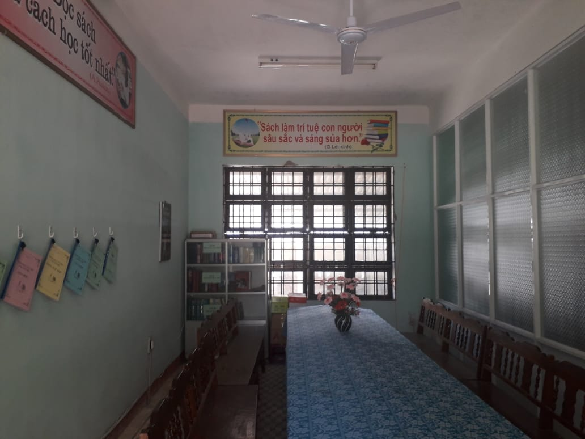

Trường THPT Trần Văn Dư được thành lập vào tháng 9 năm 2000, theo Quyết định số 47/QĐ-UB ngày 01 tháng 9 năm 2000 của Ủy Ban Nhân Dân tỉnh Quảng Nam. Trường xây dựng tại thôn An Mỹ II, xã Tam An , huyện Phú Ninh, tỉnh Quảng Nam, là nơi học tập của các em học sinh ở các xã huyện Phú Ninh và các xã cánh Nam huyện Thăng Bình. Đây là những địa phương chịu nhiều mất mát trong chiến tranh và nay vẫn còn không ít khó khăn, nhưng đa số các em học sinh có tinh thần hiếu học. Trường được vinh dự mang tên nhà chí sĩ yêu nước- tiến sĩ Trần Văn Dư người con của quê hương An Thọ- Tam An giàu truyền thống cách mạng.
Ngay sau khi được thành lập , trường tổ chức khai giảng năm học đầu tiên (2000-2001) với 8 lớp 10 có 407 học sinh. Ban đầu trường có 21 CB-GV-NV, 2 dãy với 16 phòng , nhà trường bố trí 08 phòng học, còn lại là các phòng làm việc,có thể nói thiếu thốn, khó khăn rất nhiều. Được sự quan tâm của các cấp chính quyền địa phương, sở GD&ĐT, phụ huynh học sinh, đội ngũ CB-GV-NV và học sinh nhà trường đã vượt qua những khó khăn về điều kiện vật chất để thực hiện tốt nhiệm vụ dạy và học của mình và chung tay góp sức xây dựng ngôi trường ngày càng trưởng thành và khẳng định vị trí của mình.